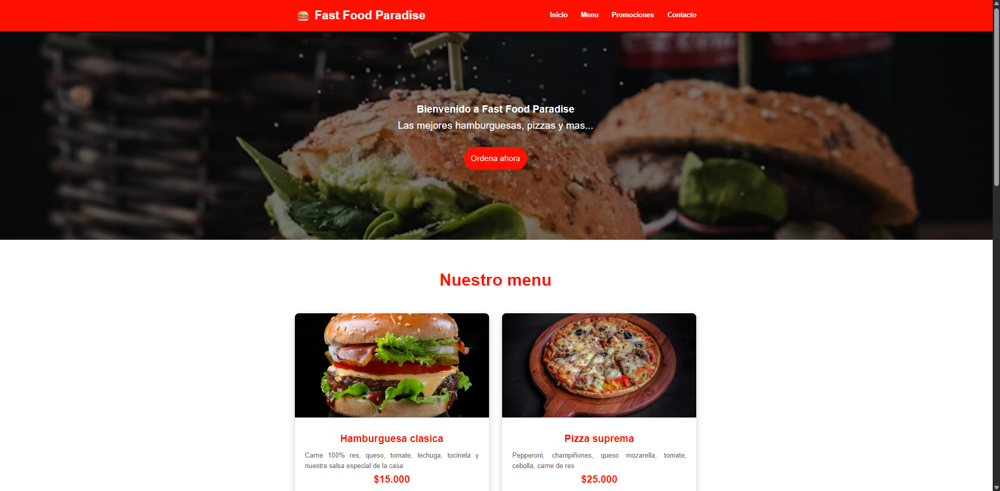

Mis Proyectos

Primera pagina (Restaurante)
Pagina realizada en HTML y CSS con su responsive para que funcione en cualquier dispositivo.

Pagina Mundo Deportivo
Pagina realizada sin ayuda, con HTML y CSS, y con su responsive para que funcione en cualquier dispositivo.
Spotify Lite
Pagina realizada en compania de Stiven Gomez y con ayuda de GitHub, con HTML y CSS y con su responsive para que funcione en cualquier dispositivo.